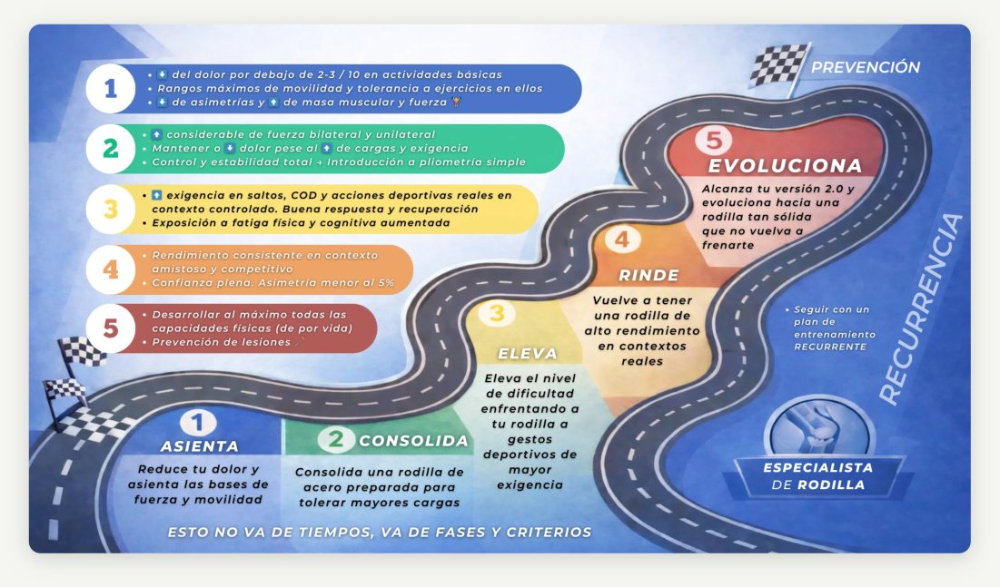

«A los 6 meses ya puedes correr.» «A los 9, a jugar.» Seguro que te lo han dicho.
El problema es que tu rodilla no sabe en qué semana estás. Hay gente que a los 9 meses está lista y gente que no. Y volver por calendario y no por criterios es una de las formas más habituales de acabar lesionado otra vez.
Por eso esta guía no te da fechas. Te da 5 fases y, en cada una, lo que tienes que cumplir para pasar a la siguiente. Si no lo cumples, no avanzas. Da igual lo que diga el calendario.

CÓMO USAR ESTA GUÍA
Lee las 5 fases para tener el mapa completo.
Busca en cuál estás tú de verdad (no en la que te gustaría estar).
Al final tienes un test rápido para comprobarlo.
Reduce tu dolor y asienta las bases de fuerza y movilidad.
QUÉ TOCA
Da igual si te has operado o si vas por la vía conservadora: el punto de partida es el mismo. Una rodilla que duele, que no se mueve del todo y una pierna que ha perdido músculo muy rápido.
Aquí el objetivo no es descansar. Es calmar la rodilla mientras recuperas movilidad, vuelves a activar el cuádriceps y empiezas a construir fuerza desde el primer día.
PARA PASAR A LA FASE 2
EL ERROR QUE MÁS VEO
Pensar que esta fase es «esperar a que se cure». La pierna que no entrenas ahora es la fuerza que te faltará luego, y esa diferencia
arrastra todas las fases siguientes.
Consolida una rodilla de acero, preparada para tolerar cargas mayores.
QUÉ TOCA
Gimnasio. Ya no se trata de que la rodilla se mueva, sino de que aguante. Fuerza con las dos piernas y, sobre todo, con una sola, para que la pierna lesionada deje de esconderse detrás de la sana.
Subimos cargas poco a poco vigilando una cosa: que el dolor no suba con ellas. Y cuando hay control, empiezan los primeros saltos sencillos.
PARA PASAR A LA FASE 3
exigencia.
simple.
EL ERROR QUE MÁS VEO
Empezar a correr porque «ya no duele». Que no duela no significa
que la rodilla esté preparada. Sin fuerza, cada zancada se la come la articulación.
Eleva el nivel enfrentando a tu rodilla a gestos deportivos de mayor exigencia.
QUÉ TOCA
Aquí empiezan los impactos de verdad: carrera, saltos más exigentes, frenadas y cambios de dirección. Todo lo que hace tu deporte, pero en un contexto controlado.
Y una parte que casi nadie entrena: hacerlo cansado y teniendo que pensar. Las lesiones no pasan en el minuto 1 con todo previsto. Pasan cuando estás fatigado y reaccionas a algo.
PARA PASAR A LA FASE 4
deportivas reales en contexto controlado, con buena respuesta y recuperación de la rodilla.
EL ERROR QUE MÁS VEO
Entrenar los saltos siempre fresco, con el ejercicio aprendido y
sabiendo lo que viene. La rodilla tiene que aprender a responder también cuando no lo ve venir.
Vuelve a tener una rodilla de alto rendimiento en contextos reales.
QUÉ TOCA
Tu deporte, ya de verdad. Fútbol, pádel, CrossFit, carrera… Primero el trabajo específico sin contacto, después con tu equipo, luego amistosos y, por último, competición.
Aquí no basta con «poder jugar». Hay que rendir igual que antes, partido tras partido. Y hay una parte que no sale en ningún test de fuerza: la cabeza. Si todavía piensas en la rodilla cuando juegas, no has terminado.
PARA PASAR A LA FASE 5
EL ERROR QUE MÁS VEO
Saltarse los pasos intermedios: de entrenar solo a jugar un partido oficial. El partido trae choques, prisas y decisiones que no has
entrenado. Cada paso intermedio te prepara para eso.
Alcanza tu versión 2.0 y una rodilla tan sólida que no vuelva a frenarte.
QUÉ TOCA
Has vuelto. Ahora viene lo que separa a quien vuelve de quien se queda: seguir entrenando.
La fuerza y el control que has ganado se pierden si dejas de trabajarlos. Por eso esta fase no termina. Es un plan de entrenamiento recurrente para seguir mejorando todas tus capacidades físicas y proteger la rodilla temporada tras temporada.
EL OBJETIVO
vida.
EL ERROR QUE MÁS VEO
Dejar de entrenar la rodilla el día que vuelves a competir. Volver no es la meta. La meta es no tener que volver a pasar por esto.
Lee de arriba abajo. Tu fase es la primera en la que no puedes decir «sí» a todo con sinceridad.
ASIENTA. ¿Tu dolor en el día a día está por debajo de 2-3 sobre 10, tienes toda la movilidad y la pierna lesionada ha recuperado músculo?
CONSOLIDA. ¿Has ganado mucha fuerza con cada pierna por separado, cargas más sin que duela más y controlas saltos sencillos?
ELEVA. ¿Corres, saltas y cambias de dirección a buen nivel, también cansado, y la rodilla responde bien al día siguiente?
RINDE. ¿Rindes como antes en partidos o competición, juegas sin pensar en la rodilla y la diferencia entre piernas es menor al 5 %?
EVOLUCIONA. ¿Tienes un plan de entrenamiento que sigues todas las semanas para mantener y mejorar lo que has ganado?
SI DUDAS EN ALGUNA
Es normal. Muchas de estas cosas no se pueden saber a ojo: la asimetría o la fuerza de cada pierna hay que medirlas. Lo importante es no avanzar a la siguiente fase sin tenerlo claro.
En EVOREHAB nos dedicamos solo a la rodilla. Te acompañamos online por las 5 fases, con un plan que entrenas donde, cuando y como quieras, 5-6 días a la semana, y con criterios medidos antes de cada paso.
deportistas recuperados clientes activos cada mes especialistas en rodilla
Escríbeme por WhatsApp desde el enlace de mi perfil de Instagram @edu.rehab, cuéntame tu caso y te digo en qué fase estás y cuál es tu siguiente paso.
EVOREHAB · Especialista de rodilla
¿Quieres que lo veamos aplicado a tu caso? Cada rodilla y cada proceso es distinto, y muchas veces pequeños ajustes marcan una gran diferencia.
Escríbeme sin compromiso